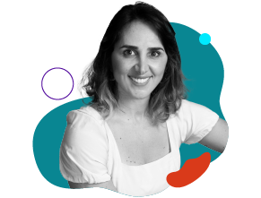
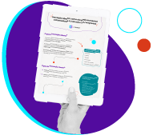
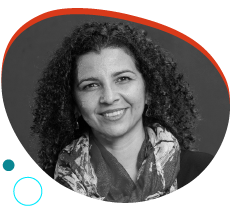
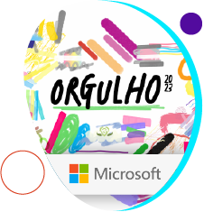
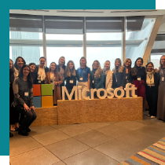

Não queremos ir para o spam! =) selecione este email como “confiável” ou mova-o para a Caixa de Entrada.
Orgulho de ser uma empresa que transforma!
Segundo dados da infojobs, 95% das trabalhadoras e trabalhadores LGBTQIAP+ ainda passam por situações de preconceito velado nas empresas.
A pesquisa revela também que as empresas não estão trabalhando ativamente para mudar essa realidade: 82% disseram que nunca trabalharam em organizações com programas específicos de aumento da diversidade e inclusão.
Todo dia é propício para a transformação, mas que tal aproveitar o mês do orgulho para engajar essa pauta na sua empresa?
As corporações da WE Impact Network – Microsoft, KPMG, Suzano, Porto, Flex e Grupo Sabin - vão te ajudar nessa missão! No nosso novo artigo, elas compartilham dicas, boas práticas e cases de sucesso para empresas que buscam promover os diretos, empoderamento e inclusão de profissionais LGBTQIAP+.
Está aproveitando a leitura?
Que tal compartilhar essa edição da WE Impact News com outras empreendedoras e empreendedores da sua rede de contatos? 😉
#WIN – WE Impact Network
Caminhos para conexão com startups

Por ,
Se sua empresa ainda não investe na colaboração com startups, pode estar perdendo potencial de inovação, agilidade e grandes chances de se destacar no mercado.
Essa forma de relacionamento é uma das principais estratégias de inovação aberta, já adotada por grandes empresas. De acordo com dados da 8ª edição do Ranking 100 Open Startups, essa tendência ficará ainda mais forte em 2023.
Em entrevista para o blog WE Impact, Lívia Hallak, Portfolio Manager da Oxygea, compartilha os benefícios, desafios e caminhos para a conexão entre startups e corporações.
título lista JSON
texto lista JSON
texto lista JSON
texto lista JSON
texto lista JSON
#DiversidadenaPrática
Inovação aberta + D&I: melhorando o que já era bom

Inovação aberta e práticas de D&I são estratégias que ganharam espaço em empresas que se atentam às tendências do ecossistema na busca por vantagens competitivas.
No entanto, o mercado ainda guarda um segredo promissor: a combinação dessas duas forças pode desencadear resultados ainda mais extraordinários!
Em um infográfico gratuito e exclusivo, desvendamos o caminho para utilizar a inovação aberta como catalisadora das práticas de diversidade, permitindo avançar no fortalecimento da marca, criação de uma comunidade, implementação de práticas ESG, entre outras vantagens.
título lista JSON
texto lista JSON
texto lista JSON
#DicadaCEO

Não existe outro jeito de você desenvolver uma habilidade que não seja colocando em prática. E como fazemos isso? É muita leitura, pesquisa, troca e colaboração entre pares.
As pessoas sempre dizem que me comunico muito bem! E eu respondo que é graças à quantidade de pitchs que já apresentei, defesas que precisei realizar, formações de professores… Fui tão exposta a processos de comunicação, diálogo e escuta que, naturalmente, fui adquirindo essa competência, além de cursos mais específicos que fiz.
Você já conhece esse videocast que conta a história de mulheres de diferentes origens, indústrias e perfis que não são conhecidas pelo grande público, mas fazem a economia girar?
A história da criadora do projeto, Dri Barbosa, por si só, já é extraordinária. Integrante do ecossistema há mais de 10 anos, ela atuou como empreendedora serial, investidora anjo, mentora e conselheira de empresas de alto crescimento.
Durante sua jornada, conquistou ainda dois exits: com a Payleven, adquirida pela SumUp em 2016, e com a Vaipe, adquirida pela Mereo em 2022. Agora, ela se junta a outras mulheres que, como ela, fazem dinheiro, para entregar um conteúdo incrível nesse novo projeto.
Vem aprender com elas!
texto lista JSON
texto lista JSON
texto lista JSON
texto lista JSON
#EmpresasQueTransformam

Compromisso com a diversidade e inclusão
Para reforçar o compromisso com a diversidade e a inclusão no mês do orgulho, nossa parceria e investidora Microsoft criou a campanha "Make Pride", com ações no Brasil e no mundo.
A big tech apoia a causa LGBTQIAP+ há mais de 25 anos. Entre as iniciativas deste ano, está o site "Unlocked Pride" e a participação na 27ª Parada do Orgulho LGBTQIAP+ em São Paulo, além de contribuições financeiras a instituições de apoio à comunidade.
Os famosos papéis de parede do Windows e planos de fundo do Teams também ganharam versões que promovem a representatividade e apoio à pauta.
undefined
texto lista JSON
#NaMídia
Carreira, maternidade e empreendedorismo
A WE Impact está na FIN4SHE! Nossa CEO, Lícia Souza, participou do “Fin4You”, quadro de entrevistas criado para conectar, inspirar e representar outras mulheres.
Ela fala sobre o início da carreira no ecossistema, os momentos mais desafiadores, o propósito que move suas ações e o papel que a maternidade teve sobre sua jornada e da WE Impact.
#NasRedes

Perdeu esse conteúdo?
Confira como foi a nossa participação no café da manhã com nossa parceira e investidora, Microsoft, para empreendedoras do programa ScaleUp da Endeavor Brasil - uma manhã repleta de insights sobre liderança feminina, cultura e inovação nas empresas.